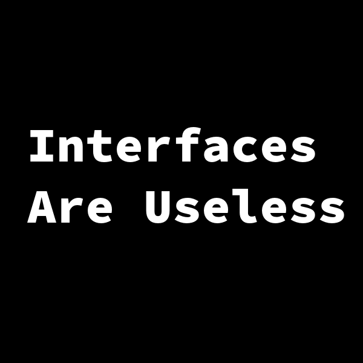

Interfaces Are Useless
When I first started using Go, one of the most confusing aspects was the interface type. I tried reading the source code of common interface definitions. I tried reading several tutorials. For a long time, I thought that interfaces were pointless, useless, and confusing.
The purpose of this article is to demonstrate that the interface type – although useless – is far from pointless and only slightly confusing. The interface through it’s uselessness, can be a powerful tool in the Go programmer’s arsenal.
A Type Without a Cause
Interfaces in Go are a type defined by a set of methods. This makes it an abstract data type.
That might sound mysterious - but an abstract type is simple to reason about when compared to its opposing form - the concrete data type.
For example, a struct is a concrete data type. A struct is defined by its relationship to the fields it contains. The internal data structure is fully defined, which is useful for functions and procedures that mutate or utilize those fields.
Contrasting the struct, an interface offers no access to internal data. The interface is secretive. It does not kiss and tell. The only thing an interface defines is what you can do with it. A group of methods, with no guarantee that anything useful has occurred when they are called.
By itself, an interface is a useless contract. A type that does absolutely nothing.
Usefulness Through Uselessness
Interestingly enough, an interface, despite being quite useless on its own - is a power tool once combined with an implementation or two. The beautiful thing about using an abstract type is that several implementations can fit a single abstraction. This is quite useful as a generic type.
Why would a programmer want a generic type? Well there are a few common use cases:
Simplified Mocks
Test Driven Development (TDD for short) has become more common as DevOps practices spread through the software community. Integration testing can quickly become painful when using defined types. Let’s take a look at a function that fetches users from a database:
func GetUser(id string, db *sql.DB) (u User, err error) {
query := `SELECT first_name, last_name, email FROM users WHERE id = ? LIMIT 1`
err := db.QueryRow(query, id).Scan(&u.FirstName, &u.LastName, &u.Email)
return
}The function above is simple enough to understand, but would be a pain point in an integration test. The function requires a *sql.DB to be passed in. When running tests, this means that the test setup will need an actual connection to a database. Tests can’t use the production database because that would be a Bad Thing™.
So the tests would need a special database just for them, and the configuration for such a database would need to be loaded during the tests.
With the test code affecting an actual database, there must be brittle setup and tear down code so that the database is in a known state whenever the tests are run. Test data will need to be inserted and removed which takes extra time for each test run.
Of course, if the implementation changes then all that configuration, setup, and tear down code will need to be modified. Seems bad.
Alternatively, the GetUser functionality could be defined via an interface, like so:
type UserService interface {
Get(id string) (User, error)
// ...some more methods
}Which means a programmer could do nifty tricks to help with testing:
type (
UserModel struct {
db *sql.DB
}
UserMock struct {
db map[string]User
}
)
var (
UserNotFound = errors.New("user_not_found")
)
func (m UserModel) Get(id string) (u User, err error) {
// same functionality as GetUser
query := `SELECT first_name, last_name, email FROM users WHERE id = ? LIMIT 1`
err := m.db.QueryRow(query, id).Scan(&u.FirstName, &u.LastName, &u.Email)
if err == sql.ErrNoRows {
err = UserNotFound
}
return
}
func (m UserMock) Get(id string) (u User, err error) {
// whats this? a simple mock!
u, ok := m.db[id]
if ok {
return
}
err = UserNotFound
}With the interface definition, any UserService can be replaced with any other. This means that an integration test can swap out the UserModel for the UserMock and forget about the database dependency all together. Looking at the UserMock this same process can be used for creating Users by inserting them into the map defined as db, which would make generating test data a breeze.
Dynamic Type Handling
Data isn’t always as clean or defined as one might like. Let’s examine some arbitrary JSON:
{
"topic": "users",
"message": "new user created",
"data": {
"firstName": "first",
"lastName": "last",
"email": "firstlast@domain.ext"
}
}{
"topic": "posts",
"message": "new post created",
"data": {
"title": "Interfaces Are Useless",
"userId": 1
}
}The examples above are virtually the same – except for the contents of the data field contained within them. What needs to be done with these bits of JSON might vary based on the topic field. Using a concrete data type for each implementation of this JSON could get messy fast. Depending on the use case, a more flexible implementation might something look like this:
type (
Event interface {
Handle() error
}
NewUser struct {
firstName string
lastName string
email string
}
NewPost struct {
title string
userID int
}
)
func ParseEvent(r io.ReadCloser) (Event, error) {
// decode json from r -- typically an http.Request body
// return an event based on decoded json
}
func (e NewUser) Handle() error {
// do something
}
func (e NewPost) Handle() error {
// do something else
}By using an interface the handling for each Event type is self-contained. This kind of implementation could also be achieved procedurally with a series of if or switch statements. However, if that code ever needs to be reused then the entirety of the logic flow needs to be duplicated. Using abstract types means that you can use one of several concrete types – which pushes a lot of boilerplate type checking from high-level business logic into a single reusable function call to ParseEvent.
But Wait – There’s More!
There are numerous other use cases for the interface type, the limit is the creativity of the Go community. The Go standard library holds many interesting examples such as io.ReadCloser.
Useful Tips For A Useless Type
Interfaces Aren’t Classes
Despite looking like classes and most usage examples being virtually line for line rip-offs from Object Oriented literature – interfaces are not classes. Rob Pike stated the following on golang-nuts:
It’s a hoary example to use geometry as an example of abstract computations, but there’s an important detail here. It’s always bothered me in OO languages that we can make Circle, Square, etc. subclasses of Shape (say), but that’s the one design decision we get to make. What if we want to align those things along other axes (so to speak), like topological genus or plant genus, if you’re a landscaper? You might lose your way or dig yourself into a hole with multiple inheritance.
In Go, that’s a non-issue: Circle can satisfy independent interfaces for TopologicalGenus or GrassGenus as well as Area or Perimeter or Symmetry or whatever. Moreover, you don’t have to work them all out ahead of time; the whole design can evolve without invalidating early decisions.
This point is critical to interfaces in Go, but people coming from an OO background don’t seem to get it. By stopping at one interface for shapes, the author misses a chance to say something vital.
Go’s interfaces aren’t a variant on Java or C# interfaces, they’re much more. They are a key to large-scale programming and adaptable, evolutionary design.
Follow the UNIX Philosophy
According to Dave Cheney, Go programs should follow the UNIX Philosophy:
…small, sharp tools which combine to solve larger tasks, oftentimes tasks which were not envisioned by the original authors.
Small interfaces can be reused in several places, even forming new interface definitions. Consider io.ReadWriter, which is an interface made of only interfaces:
type ReadWriter interface {
Reader
Writer
}
type Reader interface {
Read(p []byte) (n int, err error)
}
type Writer interface {
Write(p []byte) (n int, err error)
}More Useless Information on Interfaces
The Bigger the Interface, the Weaker the Abstraction (YouTube)